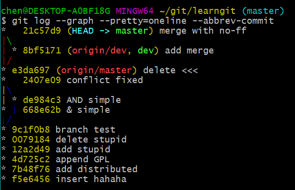
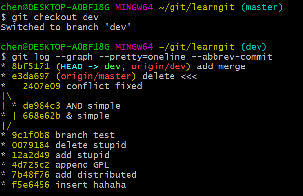

写这篇总结的目的在于给自己的博客加点东西，实在太空了
除此之外也是为了记录一下自己的学习历程
Git 指令
mkdir learngit在当前文件夹创建一个名为 learngit 的文件夹cd learngit进入到 learngit 文件夹中pwd显示当前文件夹git init对文件夹进行初始化，使之成为一个repository，并产生一个隐藏文件.gitgit add <filename>可以将一个file装至stage中，修改了几个文件就要做几次addgit commit -m "注释"将目前的stage提交至库中，-m表示添加注释git status可以让我们时刻掌握仓库的状态，比如文件做了修改但是没有add就会报出来git diff是工作区和已经发生改变但未添加到暂存区的区别，就是指尚未暂存的变化git diff --staged可以比较stage和repository的区别git log可以显示所有提交日志，有时候由于日志太长，在命令行中会有无法退出的状况，可以用Q(quit)退出，参数--pretty=oneline可以减少输出信息，参数--graph可以输出分支图git reset --hard HEAD^可以退回上一个版^的个数表示上几个版本，HEAD参数也可以是版本号，输入版本号的前几位就可以了git relog可以查看所有的版本号git checkout -- <filename>可以将做了修改但未add的file变回修改前，或者是add后但未commit的状态恢复到文件修改后add前，也就是说此时还是有修改记录，因为git是记录修改的git remote add origin <repository>可以关联本地库与远程库git push -u origin <branch>推送本地的某分支的提交到远程库，第一次推送需要-u，以后的可以不用git branch <branch>创建分支git checkout <>branch切换到某分支
上述两条可以缩写为git checkout -b <branch name>git branch -d <branch>删除某分支（合并过的），未合并的需用-D强制删除git merge <branch>将某分支合并到目前所在的分支，若出现冲突，需要先手动解决冲突，若是一个txt文本，则直接修改当前的txt文件。通常合并采用Fast Forward模式，合并后历史看不出有分支，若加入参数--no-ff可以切换为普通模式，可以历史看到分支状况git stash可以把当前的工作现场保存下来，返回一串符号。你就可以去做另外的事，等那边搞定了再回来弄。比如你在写某个功能的时候老板让你去修复某个bug，就可以保存当下的工作现场建立一个bug分支，提交后再恢复现场git stash apply恢复工作现场但是不删除之前的存储记录git stash pop恢复工作现场并删除之前的存储记录git pull <remote> <branch>可以把最新的提交抓下来，用于本地合并，解决冲突，再推送。如果该指令失败，原因是没有指定本地分支和远程分支的链接。可以用git branch --set-upstream-to=origin/dev dev来指定再git pull。本地分支名与远程最好一致git remote -v可以看到远程库信息git log --graph --pretty=oneline --abbrev-commit查看分支图，用git rebase可以合并分支，变成一条线，优点是更直观，缺点是本地的分叉提交会被自动修改git tag <tag-name>可以进行打标签，可以加上-m "注释"表示说明，标签是打在某个commit上的，可以在<tag-name>后面加上版本号来指定版本打标签git tag -a <tag-name> -m "blabla"是给某个没有注释的标签加注释git show <tag-name>可以看到说明文字git tag可以查看所有标签git push origin <tag-name>推送某个标签到远程库git push origin --tags标签全部推送git tag -d <tag-name>删除本地标签git push origin :refs/tags/<tag-name>删除远程标签
工作区和暂存区以及版本库的关系
工作区，顾名思义，就是我们进行工作，敲代码，写文本的地方repository（版本库）就是一个帮我们保存管理我们通过工作留下的东西的地方stage（暂存区）是将修改add到的地方
然而git还可以记录尚未add但是已经发生更改的东西，它不属于暂存区，
应该算是前后工作区的对比commit就是把暂存区的东西放到版本库中，commit之前用git diff --staged可以看到暂存区和版本库间的差异，commit
辨识日志中的分支线与点和HEAD

HEAD指向谁表示我们当前在哪个分支上，上图中在master分支
那么如何辨别哪根线是master，哪根是dev呢？我们切换到dev分支查看下该分支下的线图就知道了

区别很明显，当前在哪个分支，最左侧的线就是哪个分支
那一个个花瓣标志着在那个阶段有提交发生，也就是说产生了新的版本
参考教程：
廖雪峰的Git教程（问答区有很多有意思的问题）
怎么才能看懂git log线–知乎